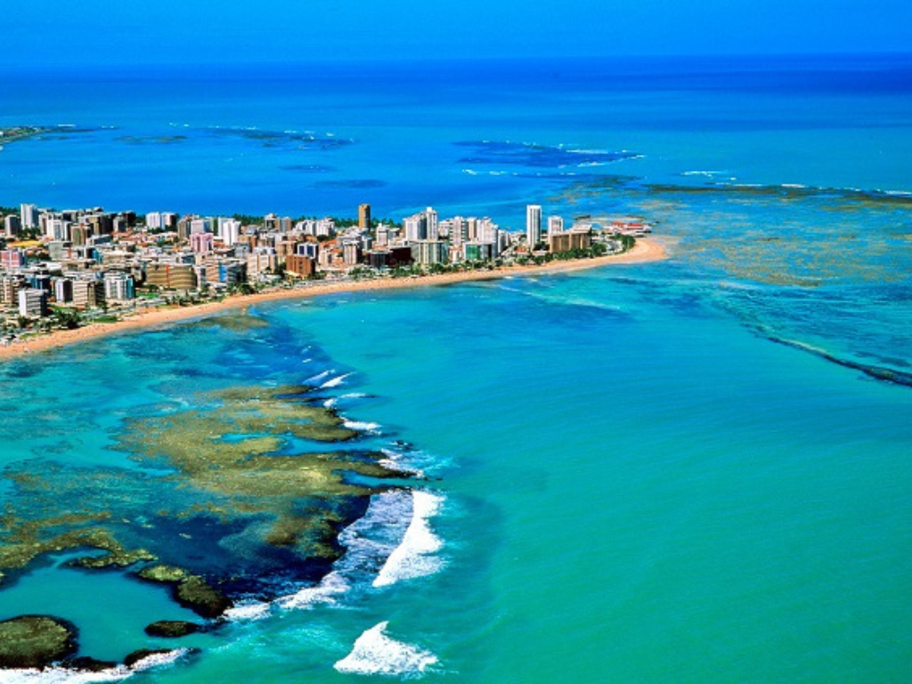

Alagoas é um estado da região Nordeste do Brasil conhecido por suas praias de águas cristalinas, coqueirais e paisagens paradisíacas. Sua capital, Maceió, é um importante destino turístico, atraindo visitantes de várias partes do mundo. O estado possui forte influência cultural africana e indígena, refletida na música, nas danças e na culinária local. Entre os pratos típicos mais conhecidos estão a tapioca, os frutos do mar e o sururu. A economia de Alagoas é baseada no turismo, na agricultura, especialmente na produção de cana-de-açúcar, e no comércio.

Voltar